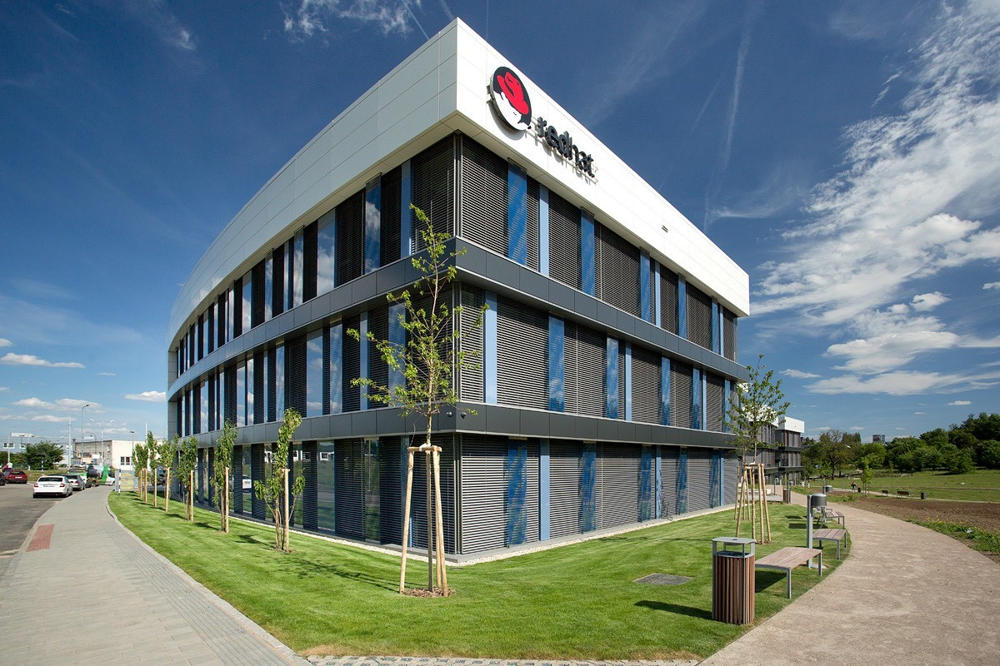
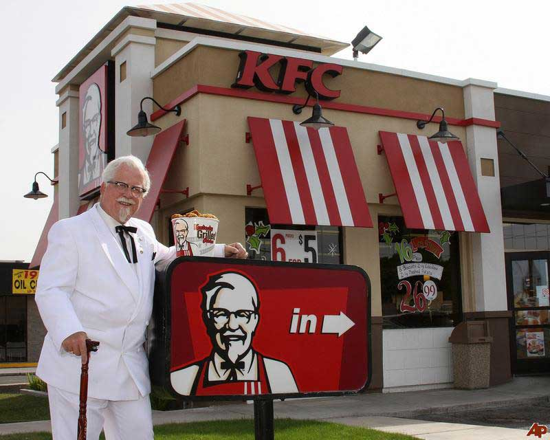
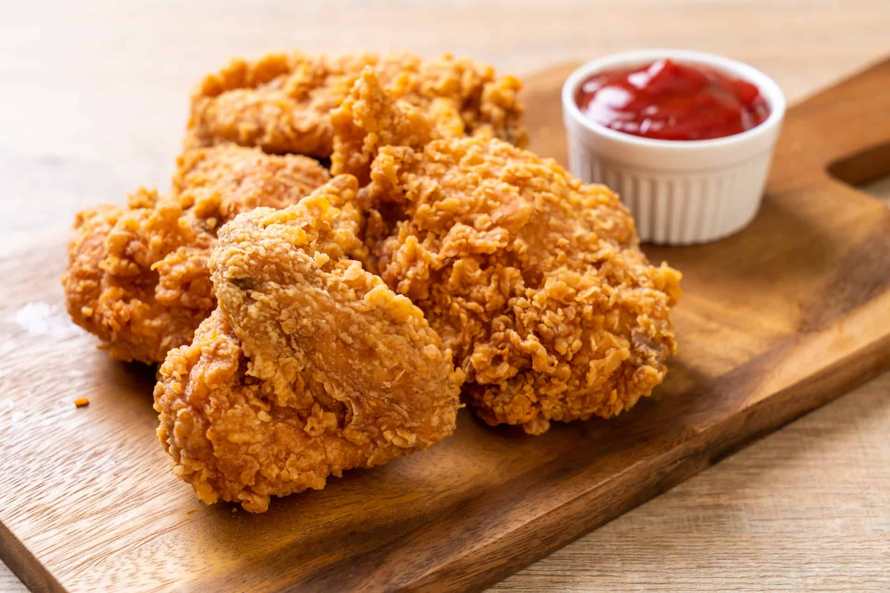

Kentucky Fried Chicken (с англ. — «Жареная курочка из Кентукки»), сокращённо KFC — международная сеть ресторанов общественного питания, специализирующаяся на блюдах из курицы. Штаб-квартира компании располагается в городе Луисвилле в штате Кентукки. KFC — вторая по торговому обороту сеть кафе в мире, уступающая лишь компании McDonald's. По состоянию на 2019 год под брендом KFC работали 820 тысяч сотрудников и более 15 тысяч торговых точек в 134 странах мира. KFC является дочерней компанией корпорации Yum! Brands, также владеющей торговыми сетями Pizza Hut и Taco Bell.


Компания KFC была основана предпринимателем Харландом Сандерсом, начавшим продавать блюда из жареной курицы во времена Великой депрессии. Обнаружив у предприятия франчайзинговый потенциал, Сандерс начал продавать лицензионные права в других штатах; первое кафе за пределами Кентукки открылось в 1952 году в Юте. Усилиями компании блюда из курицы стали неотъемлемым элементом кухни быстрого питания, составив конкуренцию гамбургеру — главному символу фастфуда. Сам же Сандерс, более известный как «полковник», стал важной фигурой американской культурной жизни. Его изображение по-прежнему широко используется в рекламных кампаниях KFC. Вместе с тем быстрое развитие бизнеса вынудило Сандерса продать компанию в 1964 году; права на бренд перешли к группе инвесторов во главе с Джоном Я. Брауном-младшим и Джеком К. Мэсси.
Оригинальный продукт KFC — обжаренные кусочки курицы в панировке, состоящей из одиннадцати трав и специй. Компоненты этой смеси, разработанной лично Сандерсом, составляют коммерческую тайну. Крупные порции данного блюда подаются в фирменном картонном ведёрке — баскете, придуманном первым концессионером KFC Питом Харманом в 1957 году. С начала 1990-х годов меню кафе пополнили бургеры из куриного филе, сэндвич-рапы, салаты, картофель фри и безалкогольные напитки, произведённые, как правило, PepsiCo. Компания использует слоган It’s finger lickin' good (так вкусно, что пальчики оближешь), который был заменён на Nobody does chicken like KFC (Никто не готовит курицу так, как KFC), а потом So good (Очень вкусно). Потом слоган поменяли обратно на первый.
